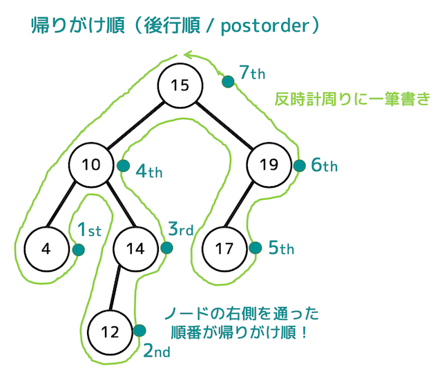
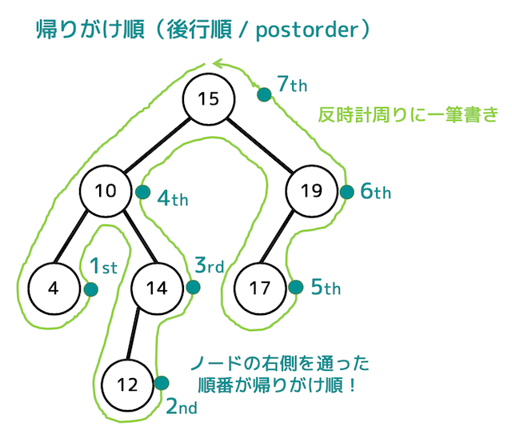

リスト, スタック, キュー
スタック
食堂のトレーのようなもので、データを積み上げる構造

キュー
行列のようなもので、データが列に並ぶような構造

食堂のトレーのようなもので、データを積み上げる構造
行列のようなもので、データが列に並ぶような構造
深さと高さは0から始まるので矢印を数えるのがベスト


つながったノードどうしが親子関係となる. 根に近いほうが親でそうでない方が子となる.
親ノードを持たないものを根、子ノードを持たないものを葉と呼ぶ. (この図ではオレンジに囲まれた部分が葉)
あるノードから見て、親を順にたどると着くノードを先祖, 子を順にたどると着くノードを子孫という.
同じを親を持つノードを兄弟という. 左側を兄とする.

 

def dfs(node):
node.traversed = True
print(node, end=", ")
for next_node in node.links:
if not next_node.traversed:
dfs(next_node)
for node in graph:
node.traversed = False
dfs(a)
from collections import deque
def bfs(node):
q = deque()
q.append(node)
node.traversed = True
while len(q) > 0:
node = q.popleft()
print(node, end=', ')
for next_node in node.links:
if not next_node.traversed:
q.append(next_node)
next_node.traversed = True
for node in graph:
node.traversed = False
bfs(a)for i in range(len(G)):
sp = nx.shortest_path(G, min(G.nodes), i)
w = 0
for j in range(len(sp)-1):
w += G[sp[j]][sp[j+1]]["weight"]
print(f"0から{i}までの重み -> {w}")